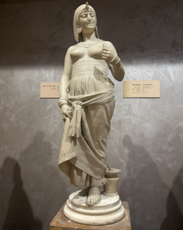

Audio Explanation
Cleopatra – Queen of Egypt

ক্লিওপেট্রা-মিশরের রানী (XLV - 151) * এই মার্বেল ভাস্কর্যটিতে প্রাচীন মিশরের শেষ রানি সপ্তম ক্লিওপেট্রাকে দেখানো হয়েছে। এটি ১৮৭০ থেকে ১৮৮০ সালের মধ্যে ইতালিতে তৈরি করা হয়েছিল। এই ভাস্কর্যটিতে তাঁর জীবনের শেষ মুহূর্তটি তুলে ধরা হয়েছে। রোমানদের কাছে রাজ্য হারানোর পর, বন্দি হওয়ার পরিবর্তে তিনি মৃত্যুকে বেছে নিয়েছিলেন। তাঁর বাম হাতে থাকা বিষধর সাপটি সেই ঘটনারই সাক্ষ্য দেয়। প্রচলিত কাহিনি অনুযায়ী, সাপ দিয়ে নিজেকে দংশন করানোর মাধ্যমে তিনি নিজের জীবনের অবসান ঘটিয়েছিলেন। তাঁর শান্ত মুখমণ্ডল ও সুনিপুণ ভঙ্গি সাহস, মর্যাদা এবং রাজকীয় আভিজাত্য প্রকাশ করে। মিশরীয় বিশ্বাস অনুযায়ী, সাপ রাজকীয় ক্ষমতা ও সুরক্ষার প্রতীক। মার্বেল পাথরের মসৃণ উপরিভাগ এবং তাঁর পোশাক ও অলংকারের সূক্ষ্ম কারুকাজ শিল্পীর অসাধারণ দক্ষতার পরিচয় দেয়।
Cleopatra – Queen of Egypt
क्लियोपेट्रा – मिस्र की रानी (XLV - 151) * यह संगमरमर की मूर्ति क्लियोपेट्रा सप्तम, प्राचीन मिस्र की अंतिम रानी, को दर्शाती है। इसका निर्माण इटली में लगभग 1870–1880 के बीच किया गया था। मूर्ति में उनके जीवन के अंतिम क्षण को दर्शाया गया है। रोमन लोगों के हाथों अपना राज्य खोने के बाद, उन्होंने बंदी बनाए जाने के बजाय मृत्यु को चुनना पसंद किया। उनके बाएँ हाथ में दिखाई गई विषैली सर्पिणी इसी घटना की ओर संकेत करती है। परंपरा के अनुसार, उन्होंने सर्प से खुद को डसवाकर अपने जीवन का अंत कर लिया था। उनका शांत चेहरा और सौम्य, गरिमापूर्ण मुद्रा साहस, आत्मसम्मान और राजसी गौरव को व्यक्त करती है। मिस्र की मान्यताओं में सर्प राजसत्ता और संरक्षण का प्रतीक भी माना जाता था। संगमरमर की चिकनी सतह तथा उनके वस्त्रों और आभूषणों में उकेरे गए बारीक विवरण कलाकार की उत्कृष्ट शिल्प-कौशल को दर्शाते हैं।
Cleopatra – Queen of Egypt
ಕ್ಲಿಯೋಪಾತ್ರ – ಈಜಿಪ್ಟಿನ ರಾಣಿ (XLV - 151) ಈ ಮಾರ್ಬಲ್ (ಅಮೃತಶಿಲೆ) ಶಿಲ್ಪವು ಪ್ರಾಚೀನ ಈಜಿಪ್ಟ್ನ ಕೊನೆಯ ರಾಣಿಯಾದ ಏಳನೇ ಕ್ಲಿಯೋಪಾತ್ರಳನ್ನು (Cleopatra VII) ತೋರಿಸುತ್ತದೆ. ಈ ಕಲಾಕೃತಿಯನ್ನು ಸುಮಾರು 1870–1880 ರ ಅವಧಿಯಲ್ಲಿ ಇಟಲಿಯಲ್ಲಿ ಕೆತ್ತಲ್ಪಟ್ಟಿತ್ತು. ಈ ಪ್ರತಿಮೆಯು ಆಕೆಯ ಜೀವನದ ಕೊನೆಯ ಕ್ಷಣವನ್ನು ಪ್ರದರ್ಶಿಸುತ್ತದೆ. ರೋಮನ್ನರೊಂದಿಗೆ ತನ್ನ ಸಾಮ್ರಾಜ್ಯವನ್ನು ಸೋತ ನಂತರ, ಆಕೆಯು ಬಂದಿಯಾಗುವ ಬದಲು ಮರಣವನ್ನು ಆರಿಸಿಕೊಂಡಳು. ಆಕೆಯ ಬಲಗೈನಲ್ಲಿರುವ ವಿಷಪೂರಿತ ಹಾವೊಂದು ಈ ಕಥೆಯನ್ನು ಹೇಳುತ್ತದೆ. ಸಾಂಪ್ರದಾಯಿಕ ನಂಬಿಕೆಯ ಪ್ರಕಾರ, ಆಕೆಯು ತನಗೆ ಹಾವು ಕಚ್ಚಲು ಬಿಡುವ ಮೂಲಕ ತನ್ನ ಜೀವನವನ್ನು ಅಂತ್ಯಗೊಳಿಸಿದಳು. ಆಕೆಯ ಪ್ರಶಾಂತವಾದ ಮುಖ ಮತ್ತು ಸುಂದರವಾದ ಭಂಗಿಯು ಧೈರ್ಯ, ಘನತೆ ಮತ್ತು ರಾಜಪ್ರಭುತ್ವದ ಹೆಮ್ಮೆಯನ್ನು ತೋರಿಸುತ್ತದೆ. ಹಾವೂ ಕೂಡ ಈಜಿಪ್ಟಿನ ನಂಬಿಕೆಯಲ್ಲಿ ರಾಜಮನೆತನದ ಶಕ್ತಿ ಮತ್ತು ರಕ್ಷಣೆಯ ಸಂಕೇತವಾಗಿದೆ. ಮೃದುವಾದ ಮಾರ್ಬಲ್ ಮೇಲ್ಮೈ ಹಾಗೂ ಆಕೆಯ ಉಡುಪು ಮತ್ತು ಆಭರಣಗಳಲ್ಲಿರುವ ಸೂಕ್ಷ್ಮ ವಿವರಗಳು ಕಲಾವಿದನ ಕೌಶಲ್ಯವನ್ನು ಪ್ರದರ್ಶಿಸುತ್ತವೆ.
Cleopatra – Queen of Egypt
ക്ലിയോപാട്ര-ഈജിപ്തിലെ രാജ്ഞി (XLV-151) * പുരാതന ഈജിപ്തിലെ അവസാന രാജ്ഞിയായ ക്ലിയോപാട്രാ ഏഴാമനെയാണ് ഈ മാർബിൾ ശില്പം കാണിക്കുന്നത്. 1870-1880 കാലഘട്ടത്തിൽ ഇറ്റലിയിലാണ് ഇത് നിർമ്മിക്കപ്പെട്ടത്. ഈ പ്രതിമ അവളുടെ ജീവിതത്തിലെ അവസാന നിമിഷത്തെ ചിത്രീകരിക്കുന്നു. റോമാക്കാരുടെ മുന്നിൽ രാജ്യം അടിയറവു വെക്കുന്നതിനേക്കാൾ മരണം വരിക്കാനാണ് അവൾ ആഗ്രഹിച്ചത്. അവളുടെ ഇടംകൈയിലുള്ള വിഷപ്പാമ്പ് ഈ കഥ പറയുന്നു. ഐതിഹ്യമനുസരിച്ച്, പാമ്പിനെ കൊണ്ട് കടിപ്പിച്ചാണ് അവൾ ജീവനൊടുക്കിയത്. അവളുടെ ശാന്തമായ മുഖവും മനോഹരമായ ഭാവവും, ധൈര്യവും മാന്യതയും രാജകീയ അഭിമാനവും പ്രകടമാക്കുന്നു. ഈജിപ്ഷ്യൻ വിശ്വാസത്തിൽ രാജകീയ അധികാരത്തിന്റെ യും സംരക്ഷണത്തിന്റെ യും പ്രതീകം കൂടിയാണ് പാമ്പ്. മിനുസമാർന്ന മാർബിൾ പ്രതലവും അവളുടെ വസ്ത്രത്തിലും ആഭരണങ്ങളിലുമുള്ള സൂക്ഷ്മമായ വിശദാംശങ്ങളും ശില്പിയുടെ വൈദഗ്ദ്ധ്യം വ്യക്തമാക്കുന്നു.
Cleopatra – Queen of Egypt
କ୍ଲିଓପାଟ୍ରା-ଇଜିପ୍ଟର ରାଣୀ (XLV-151) * ଆସନ୍ତୁ, ଏହି ଗାମ୍ଭୀର୍ଯ୍ୟପୂର୍ଣ୍ଣ ମାର୍ବଲ ମୂର୍ତ୍ତିଟିକୁ ନିକଟରୁ ଦେଖିବା—ଏ ହେଉଛନ୍ତି ପ୍ରାଚୀନ ଇଜିପ୍ଟର ଶେଷ ରାଣୀ 'କ୍ଲିଓପାଟ୍ରା'। ଏହି ଭାସ୍କର୍ଯ୍ୟଟି ୧୮୭୦ରୁ ୧୮୮୦ ମସିହା ମଧ୍ୟରେ ଇଟାଲୀରେ ନିର୍ମିତ ହୋଇଥିଲା। ଏହି ମୂର୍ତ୍ତିଟି ରାଣୀ କ୍ଲିଓପାଟ୍ରାଙ୍କ ଜୀବନର ଅନ୍ତିମ ମୁହୂର୍ତ୍ତକୁ ଅତ୍ୟନ୍ତ ଆବେଗପୂର୍ଣ୍ଣ ଭାବେ ଉପସ୍ଥାପନ କରୁଛି। ରୋମାନ୍ମାନଙ୍କ ନିକଟରେ ନିଜ ସାମ୍ରାଜ୍ୟ ହରାଇବା ପରେ, ସେ ବନ୍ଦୀ ହୋଇ ରହିବା ପରିବର୍ତ୍ତେ ଆତ୍ମସମ୍ମାନ ପାଇଁ ମୃତ୍ୟୁକୁ ବରଣ କରିବାକୁ ଶ୍ରେୟସ୍କର ମଣିଥିଲେ। ଆପଣ ଯଦି ଧ୍ୟାନର ସହ ଦେଖିବେ, ତାଙ୍କ ବାମ ହାତରେ ଥିବା ବିଷାକ୍ତ ସାପଟି ଏହି କରୁଣ କାହାଣୀକୁ ବ୍ୟକ୍ତ କରୁଛି। ପ୍ରବାଦ ଅନୁସାରେ, ସେ ନିଜକୁ ସେହି ସାପ ଦ୍ୱାରା ଦଂଶନ କରାଇ ନିଜ ଜୀବନର ଅନ୍ତ ଘଟାଇଥିଲେ। ତାଙ୍କ ମୁଖମଣ୍ଡଳର ଶାନ୍ତ ଭାବ ଏବଂ ଶାଳୀନ ଭଙ୍ଗୀ ତାଙ୍କ ଅସୀମ ସାହସ, ଗୌରବ ଓ ରାଜକୀୟ ସ୍ୱାଭିମାନକୁ ପ୍ରଦର୍ଶିତ କରୁଛି। ଇଜିପ୍ଟର ବିଶ୍ୱାସ ଅନୁସାରେ ସାପ ରାଜକୀୟ ଶକ୍ତି ଓ ସୁରକ୍ଷାର ମଧ୍ୟ ପ୍ରତୀକ । ସଙ୍ଖମଲମଲ୍ ପଥରର ଏହି ମସୃଣତା, ତାଙ୍କ ପୋଷାକର ସୂକ୍ଷ୍ମ ଭାଙ୍ଗ ଏବଂ ଅଳଙ୍କାରର କାରୁକାର୍ଯ୍ୟ, ଶିଳ୍ପୀଙ୍କ ଅସାଧାରଣ ନିପୁଣତାର ସ୍ପଷ୍ଟ ପରିଚୟ ଦିଏ।
Cleopatra – Queen of Egypt
கிளியோபாட்ரா - எகிப்தின் அரசி (XLV-151) * இந்தச் சலவைக்கல் சிற்பம் பண்டைய எகிப்தின் கடைசி அரசியான ஏழாம் கிளியோபாட்ராவைக் காட்டுகிறது. இது 1870 முதல் 1880 ஆம் காலகட்டங்களில் இத்தாலியில் உருவாக்கப்பட்டது. இச்சிற்பம் அவரது வாழ்வின் இறுதிக் கணத்தை சித்தரிக்கிறது. ரோமானியர்களிடம் தனது ராஜ்ஜியத்தை இழந்த பிறகு, சிறைப்படுவதை விட மரணத்தையே அவர் தேர்ந்தெடுத்தார். அவரது இடது கையில் உள்ள விஷப் பாம்பு இந்தக் கதையை உணர்த்துகிறது. மரபின்படி, அப்பாம்பைத் தன்னைக் கடிக்க அனுமதிப்பதன் மூலம் அவர் தனது உயிரை மாய்த்துக்கொண்டார். அவரது அமைதியான முகமும் நேர்த்தியான தோரணையும் தைரியம், கண்ணியம் மற்றும் அரச கம்பீரத்தை வெளிப்படுத்துகின்றன. எகிப்திய நம்பிக்கையின்படி, பாம்பு அரச அதிகாரத்தையும் பாதுகாப்பையும் குறிக்கிறது. மென்மையான சலவைக்கல் மேற்பரப்பும், அவரது ஆடை மற்றும் அணிகலன்களில் உள்ள நுணுக்கமான வேலைப்பாடுகளும் கலைஞரின் திறமையை பறைசாற்றுகின்றன.
Cleopatra – Queen of Egypt
క్లియోపాత్రా-ఈజిప్ట్ రాణి (XLV-151) * ఈ పాలరాతి విగ్రహం ప్రాచీన ఈజిప్టు చివరి రాణి అయిన క్లియోపాత్రా VIIను చిత్రిస్తుంది. ఇది సుమారు 1870-1880 మధ్య ఇటలీలో రూపొందించబడింది. ఈ విగ్రహం ఆమె జీవితపు చివరి క్షణాలను వర్ణిస్తుంది. రోమన్ల చేతిలో తన రాజ్యాన్ని కోల్పోయిన తరువాత, ఆమె బందీగా ఉండటం కంటే మరణాన్ని ఎంచుకుంది. ఆమె ఎడమ చేతిలోని విష సర్పం ఈ కథను చెబుతుంది. సంప్రదాయం ప్రకారం, పాము తనను కాటు వేయడానికి అనుమతించడం ద్వారా ఆమె తన ప్రాణాలను విడిచిపెట్టింది. ఆమె ప్రశాంతమైన ముఖం మరియు హుందా అయిన భంగిమ ధైర్యం, గౌరవం మరియు రాజగర్వాన్ని తెలియజేస్తాయి. ఈజిప్షియన్ల నమ్మకం ప్రకారం, పాము రాజశక్తికి మరియు రక్షణకు కూడా ప్రతీక. నునుపైన పాలరాతి ఉపరితలం మరియు ఆమె దుస్తులు, ఆభరణాలలోని క్లిష్టమైన వివరాలు కళాకారుడి నైపుణ్యాన్ని ప్రదర్శిస్తాయి.
Cleopatra – Queen of Egypt
کلیوپیٹرا-مصر کی ملکہ (XLV-151) اس سنگ مرمر کے مجسمے میں قدیم مصر کی آخری ملکہ کلیوپیٹرا ہفتم کو دکھایا گیا ہے۔ یہ مجسمہ اٹلی میں تقریباً 1870–1880 کے دوران بنایا گیا تھا اور اس میں ان کی زندگی کے آخری لمحے کو پیش کیا گیا ہے۔ رومیوں کے ہاتھوں اپنی سلطنت کھونے کے بعد انہوں نے قیدی بننے کے بجائے موت کو ترجیح دی۔ ان کے بائیں ہاتھ میں موجود زہریلا سانپ اسی واقعے کی کہانی بیان کرتا ہے۔ روایت کے مطابق، انہوں نے سانپ کو ڈسنے کی اجازت دے کر اپنی زندگی ختم کر لی۔ ان کا پُرسکون چہرہ اور باوقار انداز ہمت، وقار اور شاہی فخر کو ظاہر کرتا ہے۔ سنگ مرمر کی ہموار سطح اور لباس و زیورات کی باریک تفصیلات فنکار کی اعلیٰ مہارت کو ظاہر کرتی ہیں۔
Cleopatra – Queen of Egypt
क्लियोपात्रा-इजिप्तची राणी (XLV-151) * हे संगमरवरी शिल्प प्राचीन इजिप्तची शेवटची राणी क्लियोपात्रा सातवी दर्शवते. हे 1870-1880 च्या सुमारास इटलीमध्ये बनवले गेले होते. हा पुतळा तिच्या आयुष्याचा शेवटचा क्षण दर्शवतो. रोमनांकडे आपले राज्य गमावल्यानंतर, कैदी होण्याऐवजी तिने मृत्यू निवडला. तिच्या डाव्या हातातील विषारी साप ही कथा सांगतो. परंपरेनुसार, तिने सापाला स्वतःला डसू देऊन आपले जीवन संपवले. तिचा शांत चेहरा आणि मोहक मुद्रा धैर्य, प्रतिष्ठा आणि शाही अभिमान दर्शवतात. इजिप्शियन विश्वासात साप शाही सत्ता आणि संरक्षणाचे प्रतीक आहे. संगमरवरी गुळगुळीत पृष्ठभाग आणि तिच्या पोशाख व दागिन्यांमधील बारीक तपशील कलाकाराचे कौशल्य दर्शवतात.
Cleopatra – Queen of Egypt
ક્લિયોપાત્રા - ઇજિપ્તની રાણી (XLV - 151) આ માર્બલ શિલ્પ પ્રાચીન ઇજિપ્તની છેલ્લી રાણી ક્લિયોપાત્રા સાતમીને દર્શાવે છે. તે ઇટાલીમાં આશરે ૧૮૭૦-૧૮૮૦ દરમિયાન બનાવવામાં આવી હતી. આ મૂર્તિ તેના જીવનની અંતિમ ક્ષણ દર્શાવે છે. રોમન લોકો સામે તેનું સામ્રાજ્ય ગુમાવ્યા પછી, તેણે કેદી બનવાને બદલે મૃત્યુ પસંદ કર્યું. તેના ડાબા હાથમાં રહેલો ઝેરી સાપ આ વાર્તા કહે છે. પરંપરા અનુસાર, તેણે સાપને કરડવા દઈને પોતાનું જીવન ટૂંકાવ્યું હતું. તેનો શાંત ચહેરો અને ભવ્ય મુદ્રા સાહસ, ગૌરવ અને શાહી અભિમાન દર્શાવે છે. ઇજિપ્તની માન્યતામાં સાપ શાહી શક્તિ અને રક્ષણનું પણ પ્રતીક છે. સંગરમણરની લીસી સપાટી અને તેના વસ્ત્રો તથા ઘરેણાંની ઝીણવટભરી વિગતો કલાકારની કુશળતા દર્શાવે છે.